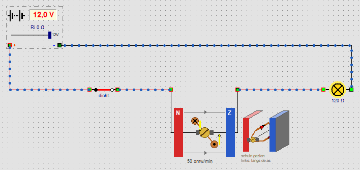

Learning path › Magnetism › Lesson 6 of 6
In lesson 5 the Lorentz force pushed one wire aside. Bend the wire into a rectangular coil on an axle between two poles, and the two long sides run parallel to the axle. In one side the current goes into the screen, in the other it comes out. So one side is pushed down and the other up: the coil turns.

After half a turn the wire that was on the left is on the right. If nothing changed, the current in it would keep flowing the same way, and then the force would push the coil back. That is why a motor has a commutator: every half turn the brushes slide from one half of the ring to the other. So the wire on the left always gets the current into the screen and is always pushed down; the wire on the right is always pushed up. The coil keeps turning the same way.
Right-click the motor and untick Commutator. Now each wire stays connected to the same brush, as with two ordinary slip rings. The coil turns a little, swings back and forth and then stays upright: there the forces point along the coil and everything is in balance.
A real motor has coils with many turns on an iron armature, and usually more than one coil, so that there is no dead point. The magnets are sometimes permanent magnets, sometimes electromagnets. You find them everywhere: in a fan, a drill, a windscreen wiper, an electric bike or car. In lesson 13 you control a motor with LogicRun.
1. The motor turns anticlockwise. Which way does it turn if you turn the magnet round and reverse the current?
2. Why does the coil without a commutator always come to rest upright, and never lying flat?
1. Anticlockwise again. Reversing once reverses the forces; reversing twice puts them back, just like the current swing in lesson 5.
2. When the coil lies flat (wires left and right), the forces push one wire up and the other down: then it turns. Only when it stands upright (wires at the top and bottom) do the forces point along the coil, and it stops turning. Without a commutator the current never reverses, so the coil comes to rest there.